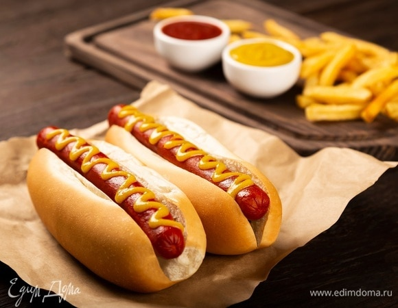

Хот - дог
Происхождение термина "хот дог" точно неизвестно. Известно лишь,
когда оно впервые появилось в печати - это произошло в 1895 году.
Также загадкой остается, кто и когда придумал разрезать длинную
* булочку и вставлять в нее сосиску. Известно, почему это было сделано:
горячие, жирные и мокрые сосиски есть руками неудобно, а одноразовой
посуды и бумажных салфеток в 19 веке еще не придумали. Разносчики
сосисок шли на самые невероятные ухищрения, чтобы побудить покупать их
товар. Один из них держал в своем фургоне перчатки, которые
выдавались во временное пользование покупателям. в 1860-е годы аккуратные
немецкие иммигранты стали продавать сосиски в комплекте с куском
хлеба, а потом неизвестный изобретатель додумался использовать для этого
булочки, потому что с ломтя хлеба сосиски часто скатывались и падали
на землю.